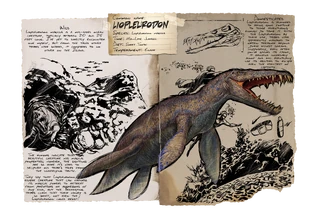

Primera aparición: Temporada 6 - capítulo 3
Tamaño (adulto): Longitud - 2,5 metros, Altura - 1,2 metros
Hábitat: BIOMAS DE NIEVE DE TODO EL MUNDO
Dieta: Carnívora
Comportamiento: Agresivo
Nivel de amenaza: Media, alta en manada, evitar si es posible
Nivel de pelea: 5000